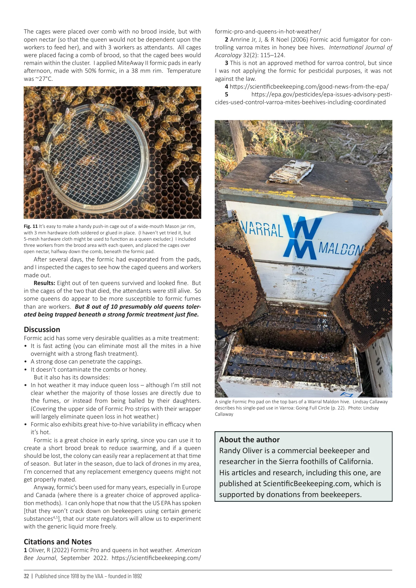

32 | Published since 1918 by the VAA – founded in 1892
The cages were placed over comb with no brood inside, but with
open nectar (so that the queen would not be dependent upon the
workers to feed her), and with 3 workers as attendants. All cages
were placed facing a comb of brood, so that the caged bees would
remain within the cluster. I applied MiteAway II formic pads in early
afternoon, made with 50% formic, in a 38 mm rim. Temperature
was ~27°C.
Fig. 11 It’s easy to make a handy push-in cage out of a wide-mouth Mason jar rim,
with 3 mm hardware cloth soldered or glued in place. (I haven’t yet tried it, but
5-mesh hardware cloth might be used to function as a queen excluder.) I included
three workers from the brood area with each queen, and placed the cages over
open nectar, halfway down the comb, beneath the formic pad.
After several days, the formic had evaporated from the pads,
and I inspected the cages to see how the caged queens and workers
made out.
Results: Eight out of ten queens survived and looked fine. But
in the cages of the two that died, the attendants were still alive. So
some queens do appear to be more susceptible to formic fumes
than are workers. But 8 out of 10 presumably old queens toler-
ated being trapped beneath a strong formic treatment just fine.
Discussion
Formic acid has some very desirable qualities as a mite treatment:
• It is fast acting (you can eliminate most all the mites in a hive
overnight with a strong flash treatment).
• A strong dose can penetrate the cappings.
• It doesn’t contaminate the combs or honey.
But it also has its downsides:
• In hot weather it may induce queen loss – although I’m still not
clear whether the majority of those losses are directly due to
the fumes, or instead from being balled by their daughters.
(Covering the upper side of Formic Pro strips with their wrapper
will largely eliminate queen loss in hot weather.)
• Formic also exhibits great hive-to-hive variability in efficacy when
it’s hot.
Formic is a great choice in early spring, since you can use it to
create a short brood break to reduce swarming, and if a queen
should be lost, the colony can easily rear a replacement at that time
of season. But later in the season, due to lack of drones in my area,
I’m concerned that any replacement emergency queens might not
get properly mated.
Anyway, formic’s been used for many years, especially in Europe
and Canada (where there is a greater choice of approved applica-
tion methods). I can only hope that now that the US EPA has spoken
[that they won’t crack down on beekeepers using certain generic
substances4,5], that our state regulators will allow us to experiment
with the generic liquid more freely.
Citations and Notes
1 Oliver, R (2022) Formic Pro and queens in hot weather. American
Bee Journal, September 2022. https://scientificbeekeeping.com/
formic-pro-and-queens-in-hot-weather/
2 Amrine Jr, J, & R Noel (2006) Formic acid fumigator for con-
trolling varroa mites in honey bee hives. International Journal of
Acarology 32(2): 115–124.
3 This is not an approved method for varroa control, but since
I was not applying the formic for pesticidal purposes, it was not
against the law.
4 https://scientificbeekeeping.com/good-news-from-the-epa/
5
https://epa.gov/pesticides/epa-issues-advisory-pesti-
cides-used-control-varroa-mites-beehives-including-coordinated
A single Formic Pro pad on the top bars of a Warral Maldon hive. Lindsay Callaway
describes his single-pad use in Varroa: Going Full Circle (p. 22). Photo: Lindsay
Callaway
About the author
Randy Oliver is a commercial beekeeper and
researcher in the Sierra foothills of California.
His articles and research, including this one, are
published at ScientificBeekeeping.com, which is
supported by donations from beekeepers.